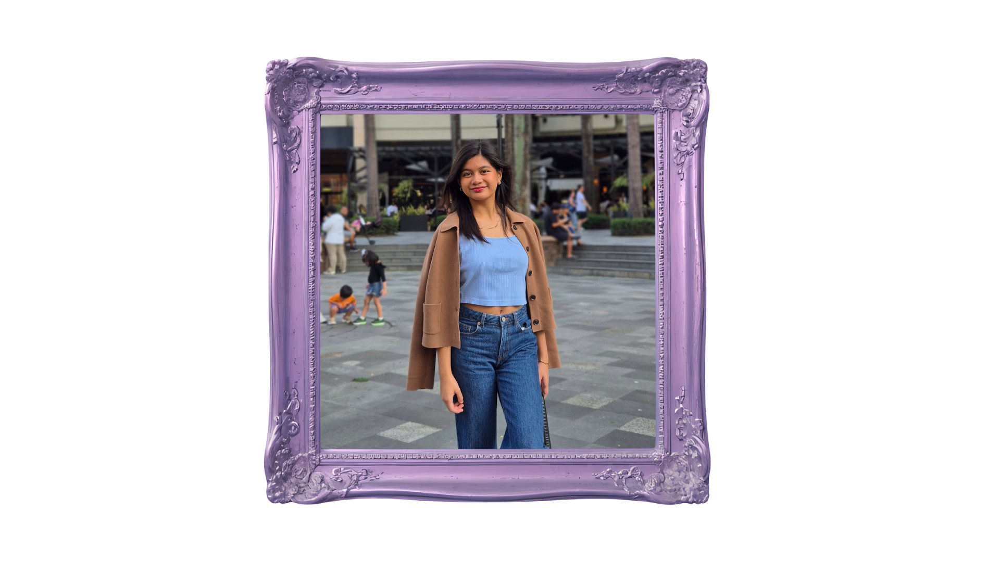

Welcome to my 3rd Quarter Page !
Welcome welcome ! In the events tab, you can see the different events I got to witness during 3rd quarter ^^ For ICT lessons, you'll see the different outputs and lessons I learned. And finally, click 3rd Quarter AP to be directed to a page with the lessons. You can click the different tabs without visiting the opening page. But if you wish to go back to the opening page, just click "3rd Quarter Home Page" ^^